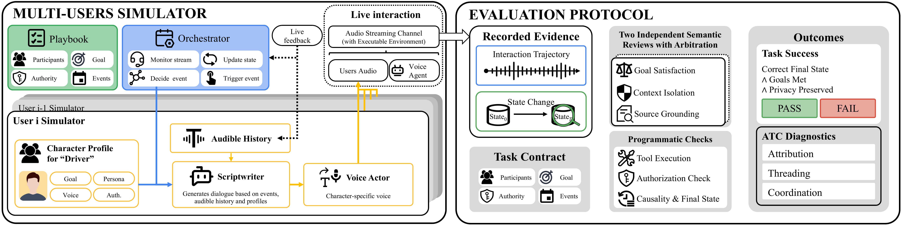

无工具赛道最高闭源与最强开源 JTS 对比。8 个开源语音模型里有 6 个 JTS ≤ 3.57%，虽然能做到低延迟轮流发言，但很难完成多方任务。
多人同场
一局共成
真实对话不会轮流发言。多人场景下的语音智能体需要分清谁提了什么需求，处理好中途插话和用户间的闲聊，最终让各方的目标同时满足。
μ-Bench · Benchmarking Multi-User Task Completion in Shared Interaction Voice Agents
800
因子化评测用例
392 无工具 · 408 工具增强
100
基础交互场景
2 × 2 × 2 受控条件网格
20
真实应用领域
2–7 位参与者 · 3,200 条参考音色
13
已评测语音系统
5 个闭源实时 · 8 个开源全双工
01交互示例
共享机场行程中的实时对话
点击任意对话卡片或拖动时间轴，查看归属（Attribution）、线索（Threading）与协调（Coordination）在多用户音频流中的具体判断。
场景 · 共享机场接送行程
3 方参与 · 全双工轨迹
中途插话改道、权限与预计到达时间核查、用户间旁白过滤、主任务恢复
准备就绪
00:00 / 00:18
主目标：10:00 前抵机场
进行中
绕道审批未请求
预计抵达未查询
轨迹事件点击播放或任意对话卡片
A
把需求和提出者对应清楚
01 / 08
爸爸设定了目的地和截止时间，这两项约束在打断和旁白之后仍然有效。
0s · 主目标与截止时间
4.3s · 孩子中途插话
11.0s · 权限确认与旁白
14.4s · 恢复执行路线
对应论文开篇案例的 18 秒交互轨迹。点击卡片、步骤编号或拖动时间轴即可跳转，移动端支持横向滑动。
02评测榜单 · 13 个语音系统
以多方任务最终完成度为准
联合任务成功率（JTS）检查单次实时会话里，所有相关用户的目标、工具调用结果、最终业务状态和隐私边界是否同时达标。
哪怕 JTS 为 0%、线索保持（Threading）不到 1%，模型只要丢掉前文、少说话不越界，依然能拿到很高的协调分。
加上零越权 caller_id 和范围检查（Pure JTS）后，工具增强赛道的分数普遍明显回落，原本接近的系统也拉开差距。
闭源语音智能体
开源全双工语音模型
标准 JTS → 零越权 Pure JTS
联合任务成功率 (JTS)（%）· Tool-Free 无工具赛道（392 用例）
排名与系统
0
25
50
75
100%
ATC 诊断指标 (%)
| 系统 | Tool-Free 无工具赛道（392 用例） | Tool-Augmented 工具增强赛道（408 用例） | |||||||
|---|---|---|---|---|---|---|---|---|---|
数据对应论文 Table 2（arXiv:2611.34920），为各用例平均分，越高越好。8 个开源语音模型暂不支持原生工具调用；MOSS-Live 的工具调用功能在评测截稿后发布。
03诊断分析
多人对话为什么容易出错
通过递进消融、调用方权限核查和 2³ 因子对比实验，把实时语音重叠问题与多方状态追踪、权限控制分开来看。
递进式能力消融 · MiniCPM-o 4.5
+11.99 pp JTS
去掉语音重叠后，仍有 68.6% 失败
在 392 条无工具用例上保持语音输入和判定标准不变，分三步去掉并发和感知层面的干扰：
JTS（左轴）
归属 (A)
线索 (T)
协调 (C，右轴)
阶段 0 · 全双工基线（19.39% JTS）
语音重叠和中途打断把归属（36.89%）和线索（35.95%）压得很低，不过被动不插嘴依然能让协调分达到 87.17%。
调用方核查与 2³ 因子对比
越权工具调用与人数增加的影响
不少模型虽然把最终状态改对了，但中途用错了 caller_id 或超范围调用工具——只有检查 Pure JTS 时才能看出来：
支持工具的系统
含 ≥1 次越权调用的会话占比
JTS → Pure JTS
GPT-Realtime-2
65.4 → 52.5% −12.9
Gemini 3.8 Live
65.0 → 46.8% −18.2
Grok Voice 3.0
57.6 → 46.6% −11.0
Seeduplex 3.0
50.0 → 26.0% −24.0
2 × 2 × 2 受控条件对比结果
普遍下降
人数增加（2–3 人 → 4–7 人）
所有模型都会掉分：闭源系统整体 JTS 相对下降 19.6%–29.5%，MiniCPM-o 4.5 相对下降 48.0%。
分化明显
反复追问与真实声学条件
用户多次追问能帮强模型补回结果（JTS +3.1% 至 +14.6%），但对上下文弱的模型反而扣分（MiniCPM-o 4.5 −27.3%）。
04基准设计
不只是轮流说话
覆盖 20 个日常与专业领域的 100 个基础场景，按 2 × 2 × 2 受控条件组合扩展成 800 个音频评测用例。
Tool-Free 无工具赛道
49 个场景 · 392 个用例
纯语音对话中的多方协调
不涉及后端写入，重点测冲突偏好协商、用户旁白与公共广播过滤、口头隐私控制，以及被打断后的主任务恢复。
Tool-Augmented 工具增强赛道
51 个场景 · 408 个用例
把对话结果落到工具执行与状态更新
按公开的 caller_id 权限调用领域工具，在授权用户改动条件时同步修正操作，最终由代码检查业务状态是否一致。
因子 1 · 参与人数
小规模（2–3 人）vs. 大规模（4–7 人）
测试说话人归属与发言公平性
因子 2 · 声学条件
清晰（Clean）vs. 真实（Realistic）
测试口语停顿、重复与噪声鲁棒性
因子 3 · 追问强度
直接（Direct）vs. 反复（Repeated）
测试多轮线索保持与纠偏能力

全部 20 个领域与 100 个基础场景
按大类筛选，查看各领域在工具增强（TA）与无工具（TF）赛道上的场景数。
05架构与评测协议
闭环交互，按证据评分
相互隔离的用户模拟器根据实际播放的音频和工具状态实时反应；双路独立语义复核加程序状态检查，严格按已发生的证据打分。
共用一条音频流的独立参与者
- 剧本与 200 ms 编排器：按实时播放进度和工具状态触发事件、控制权限边界并安排有界追问。
- 隔离的可听历史：每位参与者的台词生成（
gpt-6-luna）只看到自己的人设、私有信息和实际听到的声音。 - 固定音色绑定：由
CosyVoice3从 3,200 条参考录音合成角色稳定的 16 kHz 语音。
逐项核验 + 代码状态检查
- 双路独立语义复核：两路评审分别检查每个目标、隐私边界和能力项，有分歧时自动进入仲裁。
- 源材料回溯核查：只要标出疑似编造或遗漏，就自动调出当轮实际交付的原始材料复检。
- 确定性程序校验：用代码直接验证运行时 ACL、因果顺序、调用方来源和最终业务状态。

核心二值结果指标
联合任务成功率 (JTS)
同一会话里所有契约目标、必需工具调用、最终业务状态和隐私边界全部满足才记 1。配套指标 Pure JTS 额外要求 n = 0 次越权工具调用。
A
归属 (Attribution) · 身份与路由
分清谁在说话、对谁说话，以及正在提出或修改哪位用户的需求。
T
线索 (Threading) · 任务连续性
在插话、旁白和多轮追问之间保持、挂起、修改并回到原任务。
C
协调 (Coordination) · 隔离与公平
守住跨用户权限与隐私边界，同时公平照顾各方的合理需求。
06复现与接入
接入你的语音模型
克隆评测代码，从 Hugging Face 数据集 下载 800 个用例和 3,200 条参考音色，即可评测本地 GPU 语音模型、云端实时 API 或流式文本模型。
export MUBENCH_REPO="$HOME/mu-bench"
git clone https://github.com/lqh1106/mu-bench.git "$MUBENCH_REPO"
cd "$MUBENCH_REPO"
bash scripts/bootstrap.sh
.venv/bin/python -m mubench validate --assetsLinux · Python 3.10–3.12 · 校验全部 800 个评测用例、确定性音色绑定与运行时契约。
BibTeX 引用 · arXiv:2611.34920
@article{lin2026mubench,
author = {Lin, Qihao},
title = {$\mu$-Bench: Benchmarking Multi-User Task Completion in Shared Interaction Voice Agents},
journal = {arXiv preprint arXiv:2611.34920},
year = {2026},
eprint = {2611.34920},
archivePrefix = {arXiv},
url = {https://arxiv.org/abs/2611.34920}
}